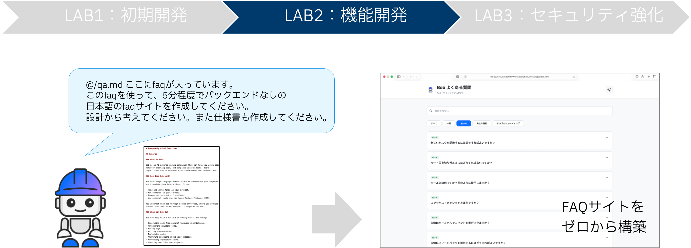
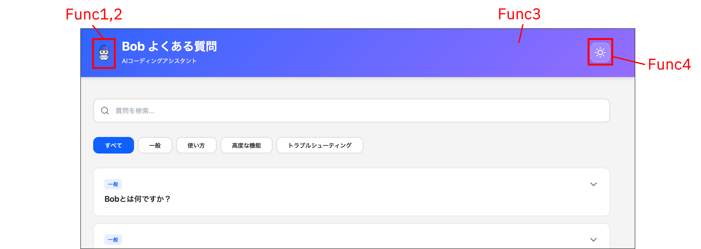
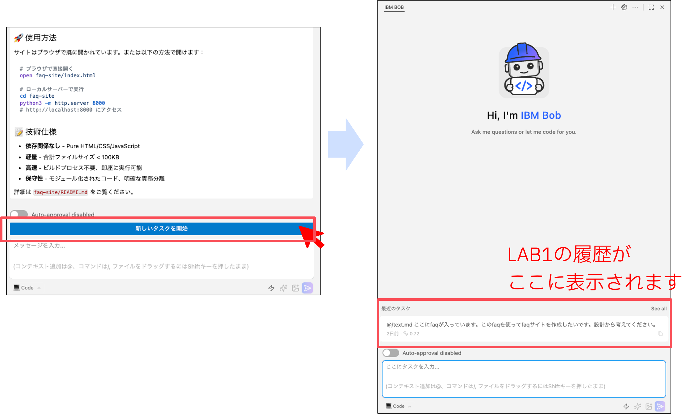
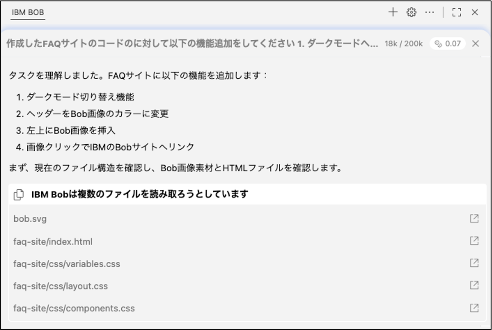
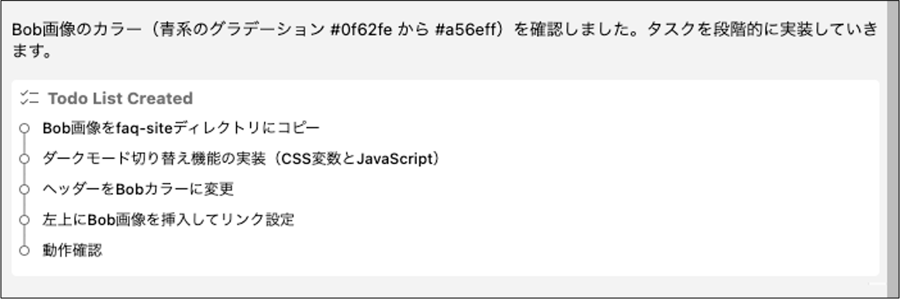
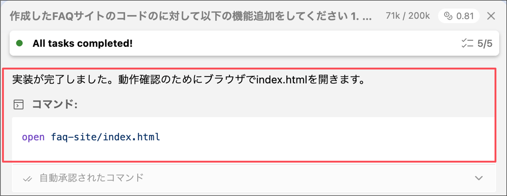
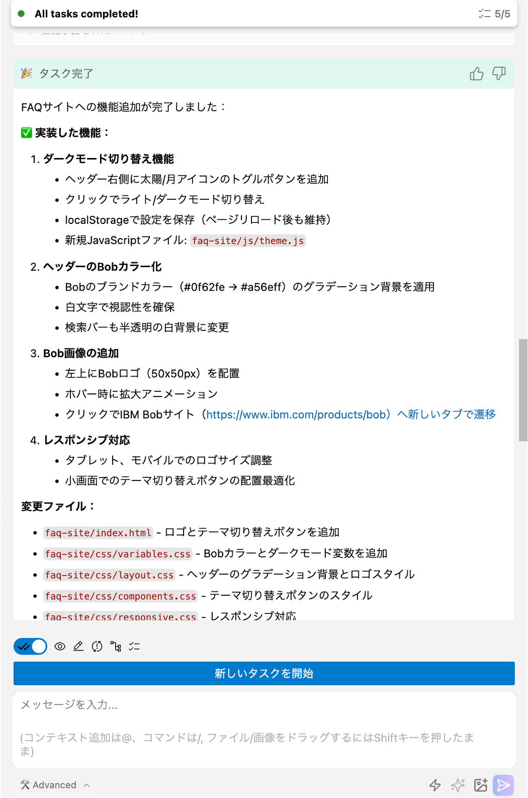

LAB2 - 機能開発

Lab1で作成したサイトをさらにブラッシュアップし、4つの機能を新たに加えます。

- Func1: Bob画像素材の挿入 ⭐ - Bob.svgをFAQサイト左上に挿入
- Func2: Bob製品サイトURLの埋め込み ⭐ - 画像クリックで製品サイト（https://www.ibm.com/products/bob）に遷移
- Func3: テーマカラーの変更 ⭐⭐ - Bobのイメージカラー（青〜紫のグラデーション）に変更
- Func4: ダークモードテーマの追加 ⭐⭐⭐ - ライト/ダークモード切り替えボタンを追加
注意: LAB1ですでに追加済みの機能はスキップしてください。
セッションの切り替え
「新しいタスクを開始」を押して、セッションを切り替えてください。

確認: - LAB1の履歴がサイドバーに表示されます - 新しいチャット画面が開きます
Promptの入力&実装計画の立案
1. Promptの入力
Codeモードを選択し、今回の機能追加のためのPromptを追加します。
Promptの例:
作成したFAQサイトに以下の機能をつけてください
1.サイト左上にBobの画像の挿入（ @/bob.svg ）
2.1の画像にリンクを挿入（https://www.ibm.com/products/bob ）
3.サイトテーマカラーをBob画像のカラーに変更( @/bob.svg )
4.ダークテーマの追加
2. ファイルの読み込み
BobがFAQサイトの既存ファイルを読み込みます。

3. Todo Listの作成
Bobが実装計画をTodo List形式で提示します。

ユーザーのアクション: - Todo Listの内容を確認 - 「承認」をクリック
コード開発
Bobが順番に既存のコードを修正していくため、その進行状況を確認します。
サイトの確認
1. サイトの確認
コード修正のタスクが完了したのち、Bobがサイトを開くコマンドを実行します。

2. サイトの機能の確認
作成されたサイトに、追加した機能が正しく反映されているか確認してください。
Func1: Bob画像の挿入 - [ ] Bob.svgが左上に表示されている - [ ] 適切なサイズで表示されている - [ ] レイアウトが崩れていない
Func2: 製品サイトへのリンク - [ ] 画像をクリックできる - [ ] 新しいタブで製品サイトが開く
Func3: テーマカラーの変更 - [ ] Bobのイメージカラーが適用されている - [ ] 全体的に統一感がある
Func4: ダークモード - [ ] 切り替えボタンが表示されている - [ ] ボタンをクリックでモードが切り替わる
注意: サイトがエラーになっている場合は、Bobにも状況を伝えてください。
対処方法: 1. エラーメッセージを確認 2. Bobにエラー内容を伝える 3. Bobの修正提案を確認 4. 修正を適用 5. 再度テスト
Lab2タスクの完了
Lab2の完了
サイトが正常に動作していることを確認し、ToDoリストがすべて完了してサマリーが出力されたら、Lab2は完了です！

完了条件: - [ ] Bob画像が正しく表示される - [ ] 画像リンクが動作する - [ ] テーマカラーが適用されている - [ ] ダークモードが正常に動作する - [ ] すべての既存機能が維持されている
余裕があれば、LAB3にも挑戦してみましょう。
前へ: LAB1 - 初期開発 | 次へ: LAB3 - セキュリティ強化